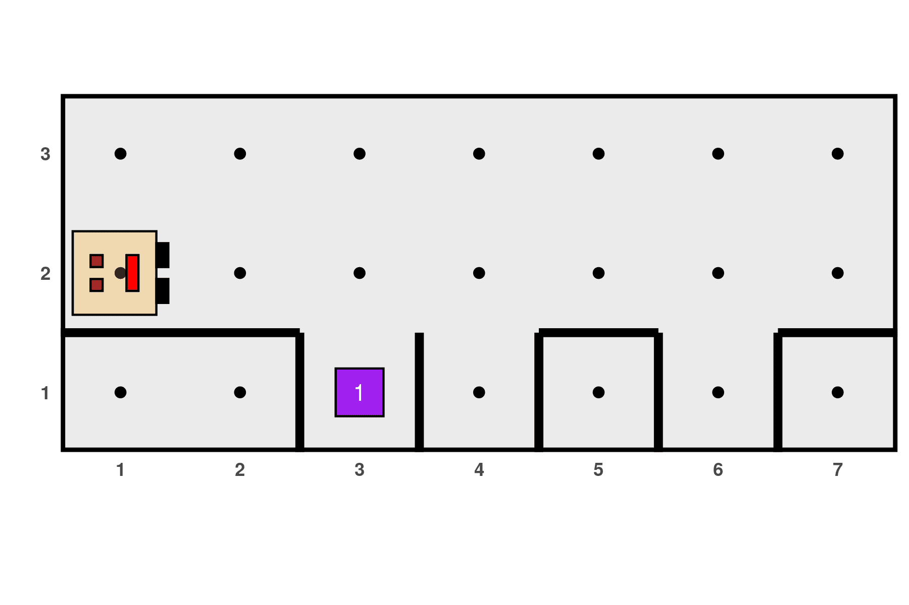
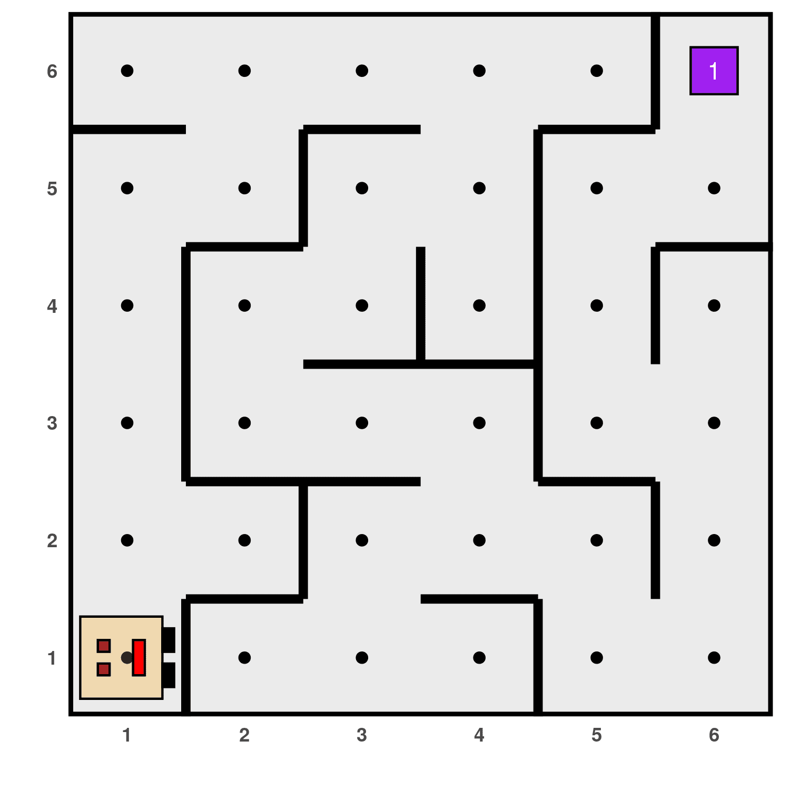
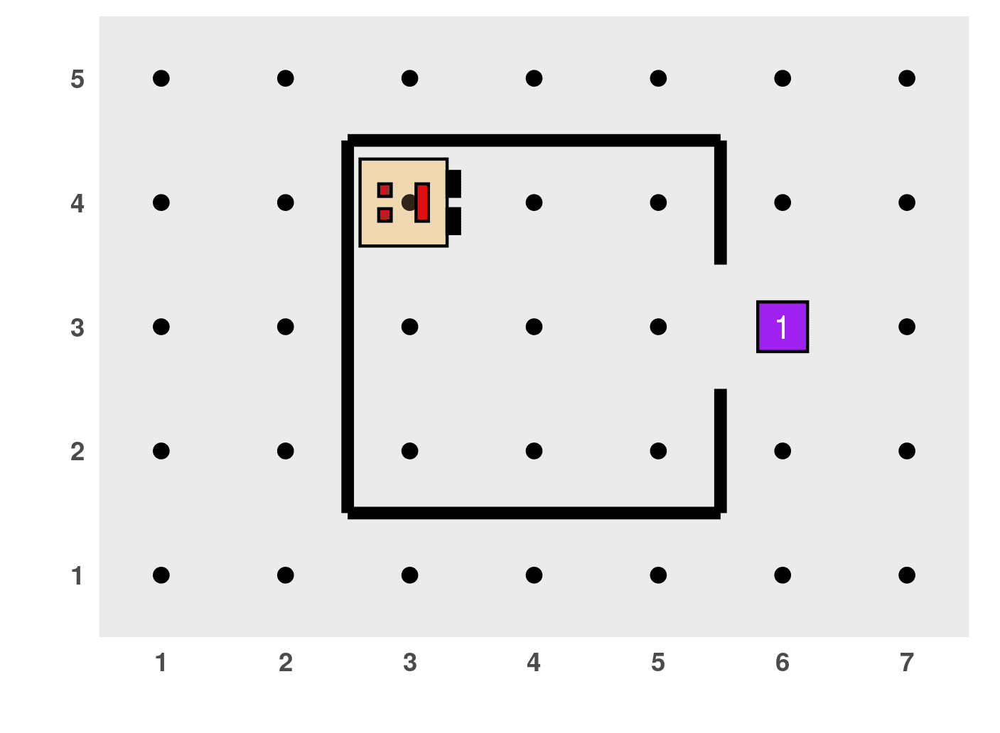
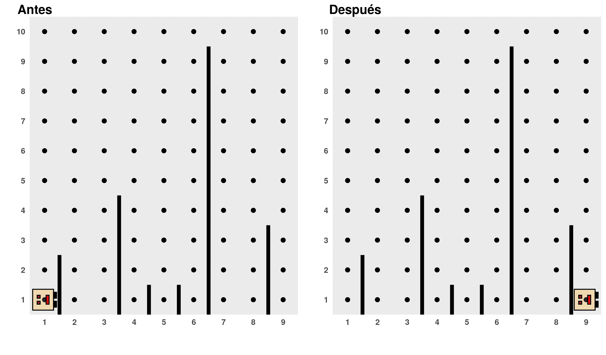
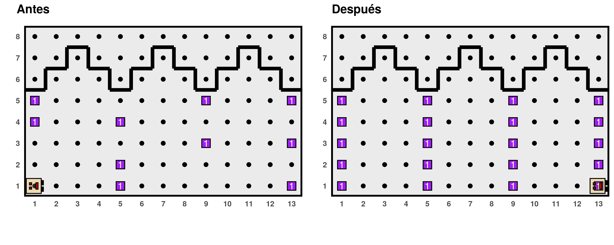

In this section, we will present other examples that will help us continue thinking about the principle of algorithmic decomposition and, furthermore, how to think of solutions that are general enough to address different versions of the same problem.
Some examples presented in this tutorial were adapted from “Karel the robot learns Java” (Eric Roberts, 2005).
Fixing the street again
In the previous section, we proposed the following program to solve the problem of filling the holes in the street:
# ------------ Definition of auxiliary functions -----------
# Function: fill_hole
fill_hole <- function() {
turn_right()
move()
if (no_beepers_present()) {
put_beeper()
}
turn_around()
move()
turn_right()
}
# ------------------- Main program -------------------
generate_world("mundo003")
while (front_is_clear()) {
move()
fill_hole()
move()
}
run_actions()This program works for worlds with streets of any length. However, it would not work if the holes were not evenly spaced as we initially assumed. It would be better to have a more general program that works under these conditions:
The world can have streets of any length.
The holes can be located at any position along the street, without restrictions on the number or spacing.
Some holes may already be filled, so Karel should not put a thing in them.
An example of this type of world is:
generate_world("mundo006")
To solve this problem, instead of starting each iteration with a move, we should first check if there is a hole where Karel is standing. If there is, Karel should fill it in if it is not already filled, and then move. Therefore, the iterating block should be modified as follows:
# ------------------- Main program -------------------
generate_world("mundo106")
while (front_is_clear()) {
if (right_is_clear()) {
fill_hole()
}
move()
}
run_actions()However, this program has a flaw because while it works in this situation...

...it does not work in this one:
# ------------------- Main program -------------------
generate_world("mundo007")
while (front_is_clear()) {
if (right_is_clear()) {
fill_hole()
}
move()
}
run_actions()
Karel stops without filling the last hole. In fact, Karel doesn’t
even go down to check if it needs to be filled or not. The problem is
that as soon as Karel fills the hole on avenue 6, it executes the
move action and ends up facing a wall,
causing the while loop to stop before
evaluating that last position. This is a fairly common logical error
when working with iterative structures, but its solution is simple. All
we have to do is add an additional check after the
while loop has finished:
# ------------------- Main program -------------------
generate_world("mundo007")
while (front_is_clear()) {
if (right_is_clear()) {
fill_hole()
}
move()
}
if (right_is_clear()) {
fill_hole()
}
run_actions()
Create other functions that make Karel even more powerful
Karel already knows how to turn, move forward, put, and gather beepers. However, we can imagine that in order to perform in its world, there are certainly some activities that it must frequently repeat. For example, moving straight ahead until it encounters a wall, gathering all the beepers it can find along a street or avenue, or emptying its backpack by putting beepers in a place until it has none left. Let’s create functions that take care of these tasks so that Karel can implement them at any time.
- Move forward until encountering a wall
# Function: move_forward_until_wall()
# Description: allows Karel to move forward until it encounters a wall
# Initial condition: none
# Final condition: Karel is facing a wall
move_forward_until_wall <- function() {
while (front_is_clear()) {
move()
}
}- Collect a line of beepers
# Function: collect_line()
# Description: allows Karel to collect a consecutive line of beepers. The line
# ends at the first cell that does not have beepers.
# Initial condition: none
# Final condition: Karel is at the end of the line, facing the same direction as
# at the beginning
collect_line <- function() {
while (beepers_present()) {
pick_beeper()
if (front_is_clear()) {
move()
}
}
}- Put all the beepers in the backpack in one place
# Function: put_all()
# Description: Karel puts all the beepers in its backpack in its current
# position
# Initial condition: none
# Final condition: none
put_all <- function() {
while (karel_has_beepers()) {
put_beeper()
}
}Collect columns of beepers
In this example, there are no walls in Karel’s world, but there are columns of beepers of varying heights along some avenues, while other avenues are empty. Karel’s job is to collect all the columns, leave them in the bottom-right position as shown in the diagram, and return to its initial position:

As we have already said, a good advice for tackling any problem is to try to break it down into smaller parts. Following this idea, we can imagine that the main program can be composed of three parts: collect all the beepers and store them in its backpack, deposit them in the corner, and return to the initial position. Something like this:
generate_world("mundo008")
collect_all()
put_all()
return_to_start()
run_actions()As it is, it is very easy to understand what needs to be done. It
also uses a function that we already have defined before,
put_all(). The only thing missing, which
is not insignificant, is to write the other two sub-algorithms, which in
turn can be broken down into smaller problems.
First, we need to collect all the columns of beepers,
without knowing how many there may be. This suggests the use of a
while loop. We have to collect column by
column until we encounter the wall:
collect_all <- function() {
while (front_is_clear()) {
collect_one_column()
move()
}
collect_one_column()
}Note that after the while we have
repeated recolectar_una_columna() for the
reason explained in the previous example. Additionally, we are telling
it to collect the column without checking if there is one... what
happens if there isn’t any? Answer this question when you read the
complete program below, but we assure you that it’s fine to do it this
way.
Of course, then we need to create this new function
recolectar_una_columna() that has to take
care of Karel:
Turn to face north.
Collect all the things stopping when there are no more (does this problem sound familiar?).
Turn around to start the descent.
Go down to the wall representing the floor (does this problem sound familiar?).
Turn again to be ready to move to the next column.
So, the function should be something like this:
collect_one_column <- function() {
turn_left()
collect_line()
turn_around()
move_forward_until_wall()
turn_left()
}Two functions appeared there that we defined in the previous exercise, which as we anticipated are quite common activities that are very useful to have them already programmed. The complete program is shown below. Remember that in R we need to first execute the functions we have invented and then the main program that uses them.
# ------------ Definición de otras funciones auxiliares-----------
# Function: collect_all()
# Description: allows collecting all the things in each column by moving along the first avenue.
# Initial condition: Karel is facing east at position (1, 1).
# Final condition: Karel is facing east at the position of the rightmost cell in the first row.
collect_all <- function() {
while (front_is_clear()) {
collect_one_column()
move()
}
collect_one_column()
}
# Function: collect_one_column()
# Description: allows collecting all the things in a single column
# Initial condition: Karel must be at the base of the column facing east
# Final condition: Karel is in the same position and direction as at the beginning
collect_one_column <- function() {
turn_left()
collect_line()
turn_around()
move_forward_until_wall()
turn_left()
}
# Function: return_to_start()
# Description: allows Karel to return to position (1, 1)
# Initial condition: Karel is facing east somewhere on the first row
# Final condition: Karel is at position (1, 1) facing east
return_to_start <- function() {
turn_around()
move_forward_until_wall()
turn_around()
}
# ------------------- Main program -------------------
generate_world("mundo008")
collect_all()
put_all()
return_to_start()
run_actions()
The Maze
Now let’s imagine that Karel is in a maze like the one below, where the thing represents the exit:

We have to create a program so that Karel can reach there, however, it has to be general to work for this and any other maze. There is a strategy to solve any maze: if when you enter, you touch the wall on your right with your hand and walk without ever letting go of it, you will eventually reach the exit. This is known as the right-hand rule and translates to always turning right, in every path choice that arises (of course, it would also work if you always turned left).
The brief program presented below implements the right-hand algorithm. Many times, programs that solve very interesting problems are neither long nor convoluted. Look at it carefully until you are convinced that you understand the logic of this algorithm:
# ------------------- Main program -------------------
generate_world("mundo009")
while (no_beepers_present()) {
turn_right()
while (frente_cerrado()) {
turn_left()
}
move()
}
run_actions()
More Problems
Next, we propose some exercises to continue reviewing what you have learned with Karel.
Problem 1: Collecting the newspaper
To warm up, let’s start with a simple problem. Imagine that Karel is at home, which is the square region in the center of the following diagram:

Karel must leave the house to pick up the newspaper (represented, of course, by a thing) and return to its initial position, where it will place the newspaper to start reading. Let’s assume that Karel’s house (its size, the location of the door and the newspaper) does not change, meaning that we don’t have to generalize this problem for other possible configurations. Write the program in R in the following ways:
a. First, solve this problem using only Karel’s four basic actions (advance, turn left, put, and collect things).
b. Second, solve the problem using the principle of algorithmic
decomposition. For this, create a sub-algorithm that takes care of Karel
leaving the house and another for Karel entering and returning to the
initial position. Use them in the main algorithm. Additionally, you can
use Karel’s superpowers (turn right and turn around), whose functions in
R are available if you run
cargar_super_karel() beforehand.
Use the world: "mundo011".
Problem 2: Going around the house
Now let’s assume that Karel needs to exercise a bit, and for that, it
will leave the house and make exactly three turns around it in a
clockwise direction. Write the algorithm and the program to do this,
considering the structure of the world provided in the previous problem
("mundo011"). Use the sub-algorithms
created in problem 1.b, as well as any others you consider necessary to
create. Karel should end up in the same position and direction as it
started.
Problem 3: Creating a line of beepers
Write a function for Karel to place a line of things starting from its current position and advancing until it encounters a wall in front. For example, the result of executing this function in an empty world would be like this:

The function should work for worlds of any size. Use the worlds:
"mundo012",
"mundo013", and
"mundo014".
Problem 4: Jumping over sticks
Write a program for Karel to jump over sticks as shown in the following diagram:

Some considerations:
Karel “jumps” over the sticks by going around them, one at a time.
Karel starts at position (1, 1) and must end at position (9, 1).
The solution should work for worlds that may have a different number of sticks and different lengths, but always with a width of 9 avenues.
Use the worlds:
"mundo015"and"mundo016".
Problem 5: Cleaning the World
In this problem, we need to help Karel clean its world since there are things scattered everywhere. It is assumed that:
Karel starts at position (1, 1).
Initially, each position in the world may be empty or have at most one thing, and by the end, there should be no things left in the world.
Karel can have any position and direction at the end.
For example, when running your program in the following world, this would be the expected result:

Use the worlds: "mundo017" and
"mundo018".
Problem 6: Placing beepers in the vertices of the diamond
Write a program for Karel to place things in the vertices of the diamond it is enclosed in, as shown below:

The program should work in worlds where the size of the diamond may
vary, but you can assume that Karel always starts positioned at the
western vertex, facing east. Use the worlds
mundo019 and
mundo020.
Problem 7: Doubling the number of beepers
Write a program for Karel to duplicate the number of things at a specific position. For example:

Assume that:
The world always looks like the diagram above (same size and no walls).
The things to be duplicated are always at position (3, 3), and there should be twice as many things in that position after the program finishes.
The initial number of things at position (3, 3) can be any, with at least one thing always present.
Karel has an infinite number of things in its bag.
The main program should be:
# Main program
generate_world("mundo021")
move()
duplicate_beepers()
move()
run_actions()In other words, you should write a function called
duplicar_cosos() that is responsible for
performing this task, which in turn can be decomposed into other
sub-algorithms. Use the world
mundo021.
Problem 8: Repairing columns
Karel has been hired to restore the columns of an ancient wall, and for this, she must place the missing stones, represented by things, on them. That is, she must achieve this:

Write a program that works in the above scheme but is also general enough to work on other walls (worlds) that meet the following characteristics:
Karel initially finds herself at the intersection of Avenue 1 and Street 1, facing east, with an infinite number of things in her bag.
The columns are always at a distance of 4 positions, on Avenue 1, 5, 9, etc.
The end of the sequence of columns is determined by the wall (the world’s edge) immediately after the last column. In the example diagram, it ends after Avenue 13, but it could end after 5, 9, 13, 17, etc.
The upper edge of the column is determined by a horizontal wall, but Karel should not assume that the height of the columns is always 5 as in the example, nor that all columns have the same height.
Some parts of the columns have a thing, representing stones that do not need repair. Karel should not place a second thing on them.
The final position and direction of Karel do not matter.
Use the worlds mundo022,
mundo023, and
mundo024.